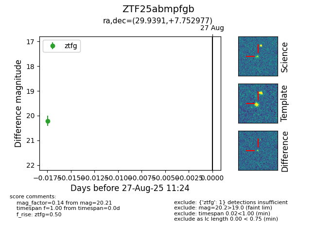

Target ZTF25abmpfgb at 2025-08-27 11:24, see:
FINK: fink-portal.org/ZTF25abmpfgb
Lasair: lasair-ztf.lsst.ac.uk/objects/ZTF25abmpfgb
ALeRCE: alerce.online/object/ZTF25abmpfgb
alt names
ZTF25abmpfgb (ztf,fink)
coordinates:
equatorial (ra, dec) = (29.9391,+7.75298)
galactic (l, b) = (150.7323,-51.39329)
photometry
last ztfg=20.21
1 ztfg detections
